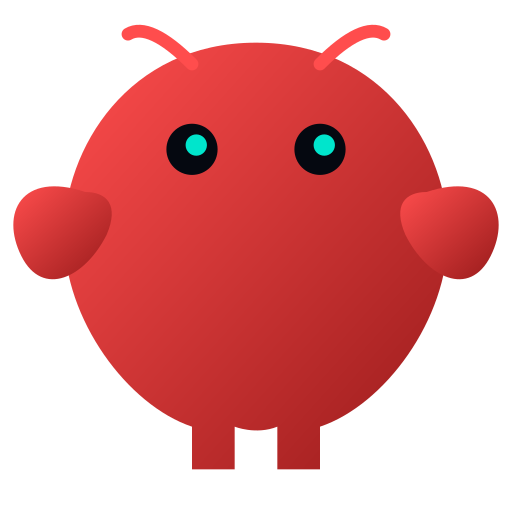
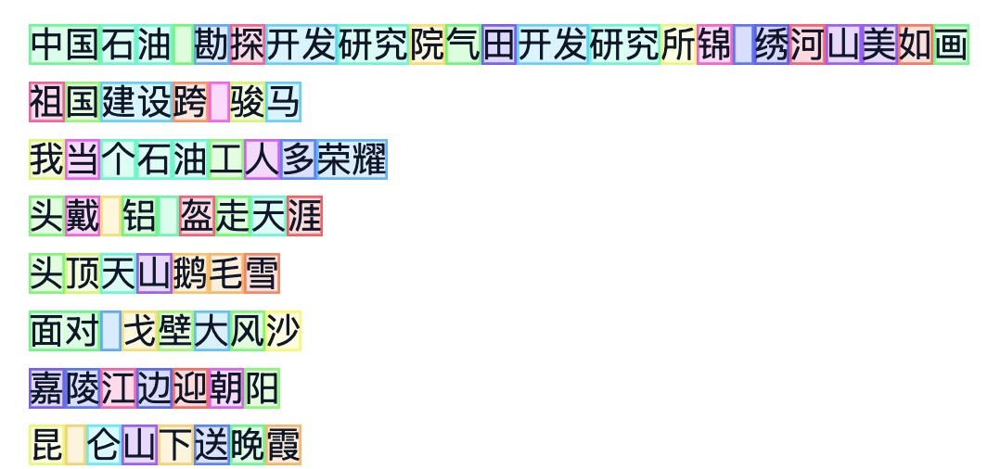
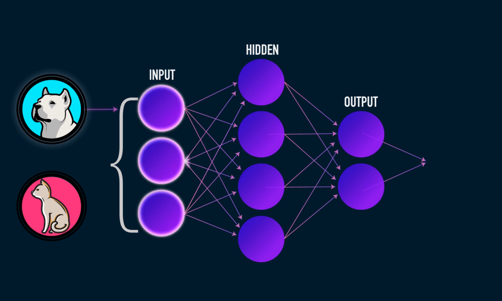
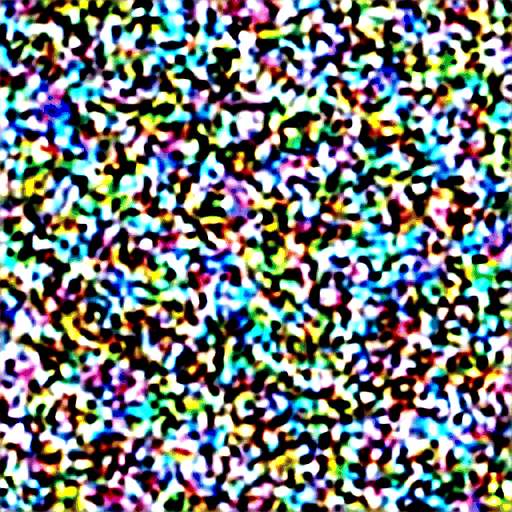
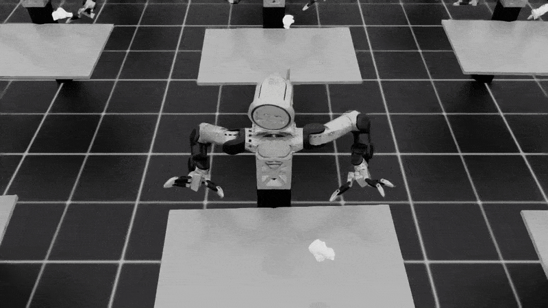

2017
Transformer（注意力架构）：计算方式被改写
自注意力让模型可以并行处理长序列，成为后来大模型的底座。
- 架构创新是第一推动力
- 让“更大规模训练”成为可能
AI 的关键变化，不只是模型更大，而是它开始具备理解语言、连接工具、组织流程、持续完成任务的能力。
1.1 / 十年时间轴
从架构突破到产品普及，AI 的演进不是匀速的——2017、2022、2025 三个节点标志着真正的能力跃迁。
2022
AI 历史上最重要的一年之一。Stable Diffusion 让生成式 AI 大众化；ChatGPT 让全球第一次直观感受到“大模型像产品一样可用”。
宏观趋势示意
1.1 / 关键判断
年份会被遗忘，底层机制不会——三次转变决定了 AI 今天能做什么、未来会往哪里走。
自注意力让模型可以并行处理长序列，成为后来大模型的底座。
模型第一次以极低门槛进入大众使用场景，AI 从研究概念变成工作入口。
AI 不再只是“会回答”，而是会思考、会调用工具、会执行任务闭环。
1.1 / 机制解释
不是一个单点突破，而是“架构 + 数据 + 算力 + 产品化”四个齿轮一起转动。
把原本难以扩展的序列建模，变成适合大规模并行训练的计算范式。
训练样本变得极其丰富，模型可以学习语言、代码、图像、音频之间的联系。
更大规模训练成为现实，同时推理成本逐步下降，使用门槛下降。
从实验室模型变成人人可用的产品，再进一步接入工作流与业务系统。
1.1 / 从模型到系统
大语言模型（LLM）已从预测文字演变为可以连接工具、组织任务、持续推进的智能系统。
模型接收到的不是整段文字，而是 token 序列。
模型在序列中寻找关联，判断哪些信息更重要。
先具备生成、总结、改写、解释的能力。
开始能搜索、运行脚本、访问文件和数据库。
能根据反馈继续下一步，而不是只答一次。
从对话框成长为数字同事或数字操作员。
1.1 / 业务翻译
因为 AI 的演进方向，恰好对应了研究院最耗时间的三类工作：资料组织、分析推演、跨岗位协作。
井史、方案、周报、标准、数模记录，本质上都是可组织的信息资产。
从数据清洗到脚本编写，再到报告初稿，很多步骤已经可以半自动化。
AI 最直接的价值不是替代专家，而是减少专家被低价值重复劳动占用。
聊天 → 编码 → 接工具 → 接知识库 → 跑流程 → 智能体 → 界面操作
1.2 / 第一轮落地
这一步的本质，是 AI 从“表达效率工具”升级为“产出效率工具”。
对研究团队最直接的价值，往往不是大模型本身，而是它能把“零散命令、重复脚本、临时分析”变成更稳定的工作方式。
1.2 / 工具连接
真正让 AI 进入工作流的关键，不只是模型更聪明，而是它终于可以接上外部系统。

它让模型以统一方式接入越来越多的工具和系统，避免每个模型都做一次定制开发。
AI 不只会总结文档，而是能真正参与“取数—分析—整理—输出”的链路。
1.2 / 私有知识
对企业和研究院来说，AI 只有接入"自己的资料"后，才真正开始懂业务语境。
报告、井史、标准、方案。
先找相关段落，而不是盲答。
把资料与提问一起交给模型。
回答可追溯、可核查。
历史开发方案、动态分析汇报、井位部署、数模报告、地质认识更新。
减少"找资料、翻文档、复制粘贴"时间，缩短从问题到结论的链路。
RAG 会改善准确性，但不会自动保证结论正确，关键判断仍需专家把关。
1.2 / 流程自动化
可以理解为把一个人每天重复做的动作拆开，然后把其中可标准化的部分交给系统。
例如生成周报或对比方案。
从文件夹、数据库、共享盘汇总。
整理摘要、对比、图表说明。
关键结论由专家确认。
邮件、群消息、知识库同步。
1.2 / 智能体
它不再是一轮问答，而是一个闭环任务系统：理解任务、规划步骤、调用工具、检查结果、继续推进。
你问一次，它答一次。
你给一个目标，它会尝试持续把事情做完。
1.2 / OpenClaw 案例
它不是更聪明的大模型，更像一层 AI 运行底座：让模型连系统、在线值守，并从多个入口被调用。

AI 正在从一个单点工具，变成可以接多个入口、持续在线运行的组织级能力。
优先做低风险、可审查、规则清晰的数字流程，不直接替代高风险工程决策。
1.2 / 下一步能力
它可以看到屏幕、理解界面、点击按钮、填写表单、下载文件。这让大量“电脑前重复动作”开始出现自动化空间。
对于研究团队，界面操作真正重要的场景往往不是“全自动”，而是帮助完成那些高频、低创造性的电脑操作。
1.2 / 新开发范式
2025 年出现的新范式——人负责目标与方向，AI 负责执行与实现。非专业人士也能快速建工具、做分析。
"你负责'想要什么'，AI 负责'怎么做'"
"你负责'研究什么'，AI 负责'怎么研究'"
AI 生成的代码和分析结果必须经过专家验证；不适合直接用于高风险工程决策；当前阶段适合加速原型和初稿，不适合替代严谨推理。
1.2 / 回到业务
会议纪要、周报、文献摘要、项目归档、模板填报，都可以优先获得效率提升。
数据预处理、脚本生成、参数对比、方案初稿、图表说明，都适合做“人机协同”。
当低价值重复劳动被削减，专家才能更多投入方案设计、机理理解和创新工作。
先把后面会反复出现的几个关键词放在一页里，建立一个统一的直觉框架。
1.3 / Token（文本片段）
可以先把 token 理解为模型处理文本时的一小段“工作单位”。它可能是一个字、一个词、半个词、数字或标点。
字、词、半词、数字、标点均可成为独立 token
API 调用以 token 计费；长报告会快速消耗上下文窗口
同一意思换一种语言，token 数往往明显不同

1.3 / Context（上下文）
当前输入、历史对话、检索资料、系统指令、工具返回结果，都会一起占用上下文窗口。
你是谁、要用什么口径回答。
用户这次到底问了什么。
RAG 找回来的文档片段。
搜索、脚本、数据库返回。
可能被压缩、淡化、甚至挤出窗口。
上下文更长 ≠ 模型一定更会用，也不代表不会忽略关键信息。
真正重要的是：让 AI 在正确时机拿到正确资料，而不是把所有资料一次性塞进去。
1.3 / 神经网络
你可以把它理解为一个可训练的复杂函数系统。输入是特征，输出是分类、预测、生成或控制结果。

1.3 / PINN（物理约束神经网络）
对油气工程来说，这类方法特别有吸引力：很多问题数据有限，但物理约束并不缺。
主要从样本数据拟合规律。
同时要求模型符合观测数据与物理方程约束。

1.3 / Diffusion（扩散）
参考 DDPM 的经典思路，可以把它理解为：先学会如何逐步去掉噪声，再把随机输入一步步还原成有结构的结果。
把真实样本逐步加噪，学习每一步该如何预测并去掉噪声。
从随机噪声出发，一步步去噪，最终得到图像、场或其他生成结果。

1.3 / RL（强化学习）
按强化学习的经典定义，可以把它理解为：智能体在环境中不断行动、接收反馈，并学习“什么情况下该做什么”，目标是让累计奖励更高。
状态、动作、奖励、策略，构成了“感知—行动—反馈”的闭环。
它特别适合多步决策、控制优化和存在延迟回报的问题。

不是单一算法奇迹，而是架构、数据、算力与产品形态共同推动。
从聊天走向工具、知识库、工作流、智能体与界面操作。
真正重要的是：这些能力如何服务地质建模、数值模拟和日常研发流程。
下一部分将进入：前沿机器学习方法在地球物理 / 地质建模中的应用。